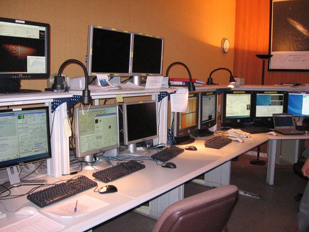

Què és un astrònom de suport?¶
Si heu vingut a parar a aquesta pàgina per casualitat, potser us estareu preguntant què caram és un astrònom de suport. En la primera entrada d’aquest nou bloc, us ho explico tot amb pèls i senyals.
Per si teniu pressa, podeu anar directament al final per saber-ho. Pels que tingueu dos minuts, és bastant probable que tots hagueu vist fotografies com aquesta en algun moment:»

En aquesta imatge s’hi pot veure un dels telescopis més grans del món, el GTC. Aquests grans telescopis són, en realitat, un gran laboratori on hi ha algunes de les tecnologies més avançades del món. No només pel telescopi en si, que ja és una peça única, sinó perquè cada telescopi té uns quants instruments d’última generació, construïts expressament per a aquests telescopis. En la seva construcció hi participen centenars d’enginyers i científics de tot el món.
Actualitzat el 16 de maig de 2021
S’ha actualitzat l’enllaç a la pàgina d’instrumentació del GTC.
Un cop aquests gegants entren en funcionament, cal un excel·lent equip de treball capaç de treure’n el màxim partit. L’objectiu final és que astrònoms de tot el món puguin obtenir la màxima informació possible dels objectes més febles de l’Univers. L’equip de treball està format per tota una sèrie d’especialistes en diverses matèries (òptica, mecànica, electrònica, programari, criogènia, etc.) i, òbviament, per astrònoms. Alguns d’aquests astrònoms són astrònoms de suport.
Què fa exactament un astrònom de suport?¶
Els astrònoms que treballen en un gran telescopi tenen diverses funcions, però molt poques vegades tenen l’oportunitat de realitzar observacions per a les seves investigacions. El motiu principal és que el temps de telescopi no es destina només als astrònoms que treballen al telescopi, sinó que es destina a tots els astrònoms de la comunitat científica. Quan un astrònom necessita dades per tal de desenvolupar les seves investigacions, segueix un procediment que s’ha anat adoptant en tots els grans telescopis, inclòs el telescopi més famós del món, el telescopi espacial Hubble.
Actualitzat el 16 de maig de 2021
S’ha actualitzat l’enllaç a la pàgina d’enviament de propostes del telescopi espacial Hubble.
El procés comença buscant el telescopi més adequat a les necessitats de cada cas. Normalment tots els telescopis, i sobretot els grans, tenen pàgines web dedicades a respondre totes les preguntes que un astrònom pot tenir per tal de valorar si les seves observacions es poden realitzar en aquell telescopi. Aquesta part és força important per a la continuïtat del telescopi, ja que un telescopi sense sol·licituds d’observació és molt difícil que rebi finançament. La feina dels astrònoms de suport comença precisament aquí, ja que són normalment ells els encarregats de mantenir el contingut d’aquestes pàgines al dia. El motiu principal és que els astrònoms de suport coneixen molt bé tots els detalls del telescopi on treballen. A més, tenen els coneixements científics necessaris per tal de saber què pot necessitar saber un altre astrònom que busqui un telescopi per observar.
El procés continua demanant temps per observar en un observatori concret. Normalment hi ha un comitè que s’encarrega de valorar totes les sol·licituds d’observació i de dictaminar quines de les sol·licituds tenen un major interès científic. És el què s’anomena Comitè d’Assignació de Temps (CAT) i està format per astrònoms externs tant al telescopi com a la proposta d’observació. En els grans telescopis sol haver-hi moltíssimes sol·licituds i, per tant, aconseguir temps d’observació en un gran telescopi requereix un cas científicament molt rellevant. De fet, en els observatoris més grans, com en el cas d'ESO, sol ser habitual que es concedeixin entre una de cada tres i una de cada cinc sol·licituds (Informe anual d’ESO).
Un cop es concedeix temps a una proposta d’observació, cal preparar el detall de totes les observacions. En aquesta etapa sol ser molt habitual que els astrònoms tinguin dubtes sobre quina és la millor estratègia d’observació, o sobre quina és la configuració instrumental més adequada, entre d’altres. Cal tenir present que és molt difícil, sinó impossible, que els observadors coneguin tots els detalls de tots els telescopis que faran servir al llarg de tota la seva trajectòria professional. És en aquesta etapa que els astrònoms de suport comencen a desenvolupar la seva tasca principal: ajudar a altres astrònoms a treure el màxim partit del temps que se’ls ha concedit en aquell telescopi. Així doncs, s’encarreguen de respondre qualsevol pregunta que els observadors puguin tenir.
A continuació poden passar dues coses: que l’observador vagi físicament al telescopi, o que les observacions es facin en mode servei. En el primer cas, quan l’observador arriba al telescopi, es pot trobar que la sala de control (des d’on es fa anar el telescopi), tingui aquest aspecte:
En els observatoris més grans, hi ha una persona (l’operador de telescopi) que s’encarrega de fer anar el telescopi, però en altres casos és l’astrònom de suport (o el mateix observador) el que s’encarrega de tot el què es veu en aquesta imatge (sala de control de l\”observatori de La Silla). Per tal d’ajudar a treure el màxim partit del temps al telescopi, l’astrònom de suport explica tot allò que l’observador pugui necessitar saber al llarg de la nit.
Actualitzat el 16 de maig de 2021
El AAO (actualment AAT) ja no proporciona astrònoms de suport per a la majoria de programes amb temps concedit al AAT. La frase i l’enllaç fent referència al AAO s’ha eliminat.
En el segon cas, quan les observacions es fan en mode servei, és l’astrònom de suport (a vegades, amb l’ajuda d’un operador de telescopi), el que s’encarrega de realitzar les observacions i d’enviar les dades obtingudes als observadors que les han demanat. De fet, és cada vegada més habitual que les observacions es facin en mode servei i, per tant, els astrònoms de suport estan darrera de moltes de les dades obtingudes en els telescopis més grans del món.
Resumint¶
Tal i com heu pogut veure, els astrònoms de suport tenen la responsabilitat de proporcionar tot el suport necessari per tal que els observadors dels telescopis més grans del món puguin treure el màxim partit del seu temps d’observació. És per això que reben el nom d’astrònoms de suport.
Actualitzat el 16 de maig de 2021
La secció explicant el motiu d’aquesta pàgina web s’ha eliminat, ja que no proporcionava informació i la majoria dels continguts es poden obtenir directament de la pàgina d’inici.